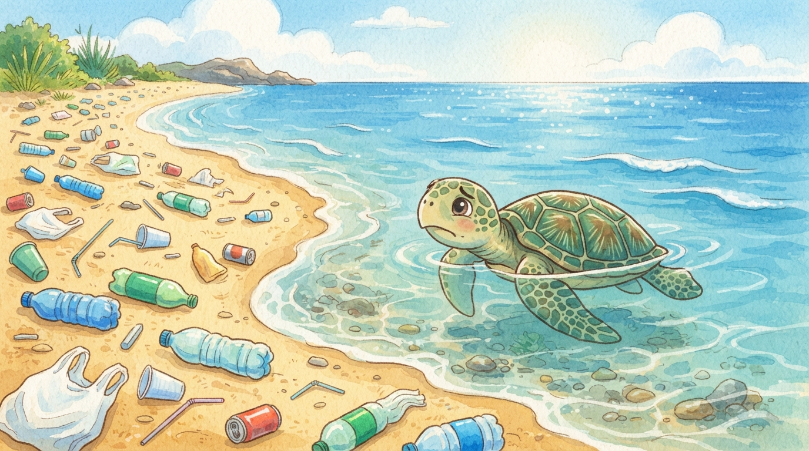
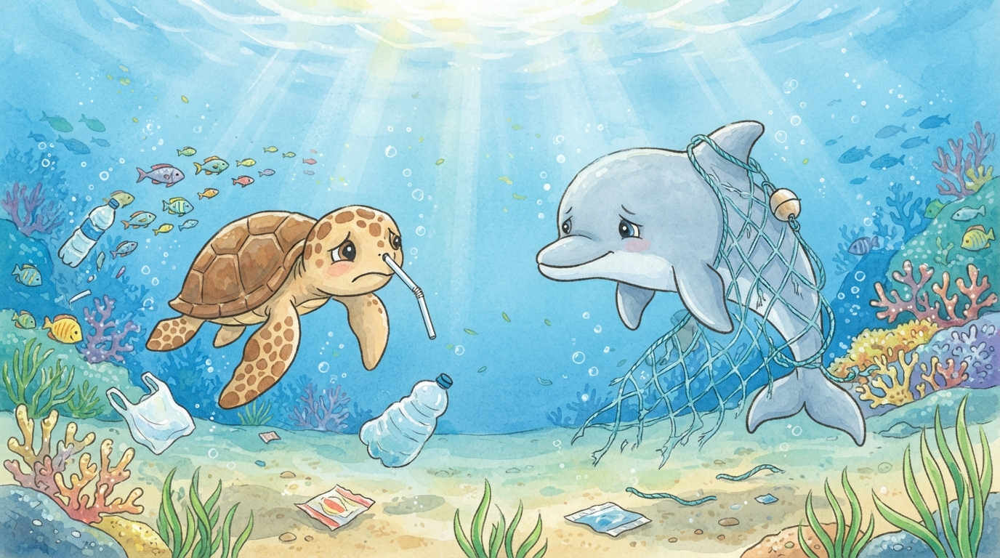
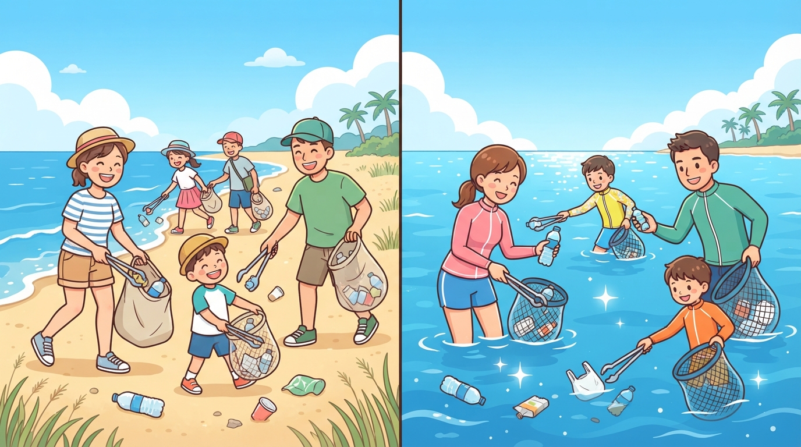
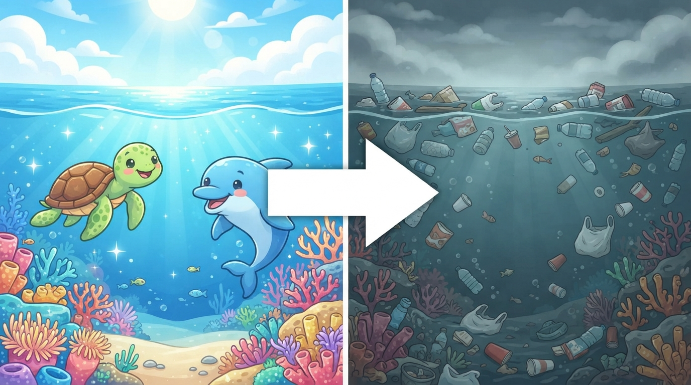

우리가 찾은 문제
바다 생물들이 쓰레기를 먹이로 착각해요.
그물에 걸리거나 코에 빨대가 박히기도 해요.
13조 바다 지킴이

바다 생물들이 쓰레기를 먹이로 착각해요.
그물에 걸리거나 코에 빨대가 박히기도 해요.

"어떻게 하면 바다 생물들을 지킬 수 있을까?"
우리가 플라스틱 등의 쓰레기들이 바다로 버려지는 것을 플로깅으로 막을 수 있어요.

깨끗한 바다는 동물들이 행복하게 살아요. 하지만 쓰레기로 가득한 바다는 동물들이 살 수 없어요.

오늘부터 할 수 있는 일: 나 자신부터 캠페인에 참여해요.
친구들과 함께 할 수 있는 일:
13조 바다 지킴이
감사합니다!
스페이스: 숨기 · Shift 또는 P: 잠깐 멈춤 · 15초마다 다음 단계로!
주운 쓰레기: 0개